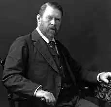

Абрахам "Брем" Стокер народився 8 листопада 1847 року в Дубліні. У дитинстві через хворобу він до семи років не міг вставати і ходити. Ця обставина залишила слід у творчості письменника — граф Дракула, персонаж його головного роману, багато часу проводить у сні. Проте, подолавши хворобу, Стокер під час навчання в університеті Дубліна був хорошим футболістом і легкоатлетом.
Після закінчення з відзнакою математичного факультету Триніті-коледжу Стокер довгий час працював на державній службі, одночасно виступаючи на сторінках дублінської газети "The Evening Mail" як журналіст і театральний критик. У цей час у нього зав'язалися дружні стосунки з англійським актором Генрі Ірвінгом. У 1878 році Ірвінг запропонував Стокеру стати директором-розпорядником театру "Ліцеум" (Lyceum Theatre), і Стокер переїхав до Лондона. Протягом 27 років Стокер був менеджером Ірвінга до самої смерті в 1905 році. Стокер важко переживав смерть друга — з ним стався удар, і цілу добу він не приходив до тями.
Дружба з Ірвінгом допомогла Стокеру увійти у вищий світ Лондона і познайомитися з Артуром Конан Дойлем та Джеймсом Вістлером. Стокер був одружений з Флоренс Белком, в яку був закоханий Оскар Уайльд. Стокер є автором безлічі творів, але славу йому приніс тільки роман "Дракула", опублікований в 1897 році і написаний під впливом творчості Джозефа Шерідана Ле Фаню (1814—1873) і його готичної вампірської новели "Кармілла" (1872). Над романом Стокер працював вісім років, вивчаючи європейський фольклор і легенди про вампірів. Син Брема Стокера та його дружини Флоренс Белкхем, Ірвінг Ноель Торнлі Стокер, народився 31 грудня 1879 р., а помер 16 вересня 1961 р., Острів Вайт, Велика Британія. Брем Стокер помер у Лондоні 20 квітня 1912 року через прогресуючий параліч. Романи і новели: 1874 — Кришталева чаша 1875 — Проїзд Прімроуз / The Primrose Path 1879 — Обов'язки дрібних клерків в Ірландії 1890 — Перевал змії / The Snake's Pass 1891 — Сім золотих ґудзиків/ Seven Golden Buttons (написано у 1891 році, багато матеріалів повторно використано в "Міс Бетті", опубліковано посмертно у 2015 році) 1895 — Води Моу / The Watter's Mou 1897 — Дракула / Dracula 1898 — Міс Бетті / Miss Betty 1902 — Таємниця моря / The Mystery of the Sea 1903 — Скарб семи зірок / The Jewel of Seven Stars 1905 — Брама життя / The Man (випущений також як The Gates of Life) 1906 — Приватні спогади про Генрі Ірвінга / Personal Reminiscences of Henry Irving 1908 — Леді Етлін / Lady Athlyne 1909 — Дама в савані / The Lady of the Shroud 1910 — Знамениті ошуканці / Famous Impostors 1911 — Лігво білого хробака / The Lair of the White Worm 1998 — Великі історії про привидів (складено Пітером Глассманом, ілюстровано Баррі Мозером) / Great Ghost Stories (Compiled by Peter Glassman, Illustrated by Barry Moser)